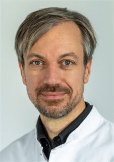
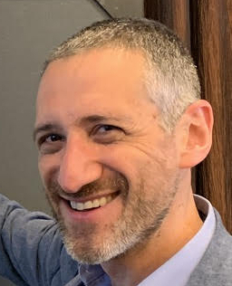
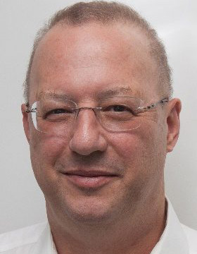

About
The conference is organized by the "Translational Brain Imaging Training Network" (TRABIT).
The TRABIT is an interdisciplinary and intersectoral joint effort of computational scientists, clinicians, and the industry in the field of neuroimaging. Its aim is to train a new generation of innovative and entrepreneurial researchers to bring quantitative image computing methods into the clinic, enabling improved healthcare delivery to patients with brain disease.
Speakers
-

Jan Kirschke
PD. Dr. Kirschke conducts research in quantitative neuro-oncologic and musculoskeletal imaging. Starting in 2001 with research on high resolution bone imaging, he is now head of the quantitative imaging research group at the Department of Diagnostic and Interventional Neuroradiology at TUM. He develops imaging protocols and algorithms to analyze recurrence and tumor growth in glioma patients as well as to predict osteoporotic fractures and treatment success in back pain patients. PD Dr. Kirschke studied medicine in Regensburg and Munich, where he finished his thesis in 2004. He subsequently moved to San Francisco where he worked as a postdoctoral researcher in the musculoskeletal quantitative imaging group at UCSF. In 2006 he started his training in radiology at the Department of Diagnostic and Interventional Radiology of the Technical University Munich, Germany. He was board-certified in 2012 and works as senior consultant at the Department of Diagnostic and Interventional Neuroradiology since 2013.
-

Daniel Reich
Dr. Reich studied math and physics at Yale and earned his MD from Cornell and his PhD in neurophysiology from The Rockefeller University, where he studied how nerve cells in the visual system encode what we see. His further training includes a fellowship in diagnostic neuroradiology and residencies in radiology and neurology at Johns Hopkins Hospital. Dr. Daniel Reich is Senior Investigator at NIH/NINDS, where he directs the Translational Neuroradiology Section and leads clinical studies focusing mainly on multiple sclerosis (MS). He is also an attending neuroradiologist at the NIH Clinical Center and an Adjunct Professor of Radiology, Neurology, and Biostatistics at Johns Hopkins University. Research in Dr. Reich’s lab develops advanced MRI techniques to understand MS and adapts those techniques for clinical trials and patient care. The lab harnesses noninvasive imaging modalities to dissect biological mechanisms of tissue damage, both by performing longitudinal studies on time scales relevant for disease processes and by examining radiological-pathological correlations in autopsy tissue and animal models. Dr. Reich has authored more than 240 peer-reviewed publications, presented more than 150 invited lectures across the world, and has been principal or associate investigator of more than 50 clinical protocols. In 2018, Dr. Reich’s lab reported that human and nonhuman primates have a lymphatic system in the membranes covering the brain and showed how that system can be imaged noninvasively with MRI.
-
Ellen Grant
Dr. Grant holds a Master of Science degree in physics and an MD from the University of Toronto. She did her radiology residency at Vancouver General Hospital in British Columbia, Canada, and her fellowship in adult and pediatric neuroradiology at the University of California, San Francisco. She is now a Professor of Radiology and Pediatrics at the Harvard Medical School. Dr. Grant headed the Division of Pediatric Radiology at Massachusetts General Hospital for five years before moving to Children's Hospital Boston to become the founding director of the Fetal-Neonatal Neuroimaging and Developmental Science Center and the first incumbent of Children's Hospital Boston Chair in Neonatology. At Children's she holds appointments in the Division of Newborn Medicine and the Department of Radiology. Dr. Grant is a co-author of two popular textbooks for clinical neuroradiology and has won a number of awards for her research efforts as well as recognition for her clinical excellence.
-

Ron Kikinis
Dr. Ron Kikinis received his M.D. degree from the University of Zurich, Switzerland, in 1982. He trained as a resident in radiology at the University Hospital in Zurich, and as a researcher in computer vision at the ETH in Zurich, Switzerland. In 1988, he moved to Brigham & Women's Hospital, and in 1990, founded the Surgical Planning Laboratory, Department of Radiology, Brigham and Women's Hospital, Harvard Medical School, Boston, MA. In 2004, he was appointed Professor of Radiology at Harvard Medical School, and in 2010, was appointed the Robert Greenes Distinguished Director of Biomedical Informatics, Department of Radiology, Brigham and Women's Hospital. From January 2014 through February 2020, he took on a part-time position in Germany as Institutsleiter of Fraunhofer MEVIS and Professor of Medical Image Computing at the University of Bremen, while continuing his activities in the U.S. On March 1, 2020, he returned to Boston full time and was appointed the B. Leonard Holman Professor of Radiology, Harvard Medical School, and Vice-Chair for Biomedical Informatics Research, Department of Radiology, Brigham and Women’s Hospital.
-

Christos Davatzikos
Christos Davatzikos is the Wallace T. Miller Sr. Professor of Radiology at the University of Pennsylvania, and Director of the Center for Biomedical Image Computing and Analytics. He holds a secondary appointment in Electrical and Systems Engineering at Penn as well as at the Bioengineering an Applied Mathematics graduate groups. He obtained his undergraduate degree by the National Technical University of Athens, Greece in 1989, and his Ph.D. degree from Johns Hopkins, in 1994, on a Fulbright scholarship. He then joined the faculty in Radiology and later in Computer Science, where he founded and directed the Neuroimaging Laboratory. In 2002 he moved to Penn, where he founded and directed the section of biomedical image analysis. Dr. Davatzikos’s interests are in medical image analysis. He oversees a diverse research program ranging from basic problems of imaging pattern analysis and machine learning, to a variety of clinical studies of aging and Alzheimer’s Disease, schizophrenia, brain cancer, and brain development. Dr. Davatzikos has served on a variety of scientific journal editorial boards and grant review committees. He is an IEEE fellow, and a fellow of the American Institute for Medical and Biological Engineering.
Schedule
| Time | Slot | Description |
|---|---|---|
| 07.09.2021 | 1st day | |
| 14h30 | Pitches | Fetal Brain Disorders |
| 14h40 | Ellen Grant Children's Hospital Boston | Something on fetal |
| 15h40 | Break | |
| 15h55 | Round table | |
| 16h55 | Break | |
| 17h10 | Speed networking | Every 5 minutes you will be assigned to a zoom room with a random conference's participant. This is a fantastic opportunity to engage and exchange information with others in a fun and casual way. |
| 17h10 | One-on-one networking | Take advantage of a 10 minutes conversion with the speaker of the day to discuss science, career opportunities or ask any question. Note, spots are limited and need to be booked in the registration's form. |
| 08.09.2021 | 2nd day | |
| 14h30 | Pitches | Brain Tumors |
| 14h40 | Ron Kikinis Harvard Medical School | Something on brain |
| 15h40 | Break | |
| 15h55 | Round table | |
| 16h55 | Break | |
| 17h10 | Casual networking | The perfect chance to mingle with other conference's participants in common zoom rooms. |
| 17h10 | One-on-one networking | Take advantage of a 10 minutes conversion with the speaker of the day to discuss science, career opportunities or ask any question. Note, spots are limited and need to be booked in the registration's form. |
| 18h00 |
Christos Davatzikos
University of Pennsylvania
|
Something on brain |
| 09.09.2021 | 3rd day | |
| 14h30 | Pitches | Multiple sclerosis |
| 14h40 | Daniel Reich NIH | Something on MS |
| 15h40 | Break | |
| 15h55 | Round table | |
| 16h55 | Break | |
| 12h10 | One-on-one networking | Take advantage of a 10 minutes conversion with the speaker of the day to discuss science, career opportunities or ask any question. Note, spots are limited and need to be booked in the registration's form. |
| 10.09.2021 | 4th day | |
| 09h00 | Pitches | Stroke/Neurovascular Disease |
| 09h20 | Jan Kirschke TUM | Something on neurovascular |
| 10h20 | Break | |
| 10h35 | Round table | |
| 11h35 | Break | |
| 12h00 | Stories of failures | Failure is an essential and inevitable part of scientific research and so it is learning to handle it. Let's share our own professional failures and learn from each other's. Feel free to step forward and tell your own experience! |
| 12h00 | One-on-one networking | Take advantage of a 10 minutes conversion with the speaker of the day to discuss science, career opportunities or ask any question. Note, spots are limited and need to be booked in the registration's form. |
Partners
Sponsors

European Union's Horizon 2020 research and innovation program under the Marie Sklodowska-Curie grant agreement No 765148